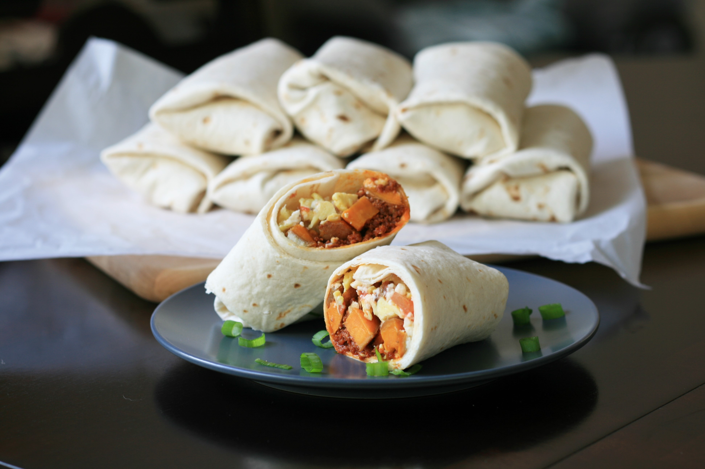

The Cook
Potato and Chorizo Burritos

Description
The sweetness from the sweet potatoes is the perfect complement to the spicy chorizo inside these make-ahead burritos! Store in the fridge for up to 3 days or freeze. Take one out of the freezer and thaw in the fridge overnight for a quick breakfast idea!
Ingredients
- 2 medium sweet potatoes, scrubbed and cut into 1/2-inch cubes
- 3 green onions, chopped
- 2 tablespoons olive oil
- 1/2 teaspoon garlic powder
- 1/2 teaspoon salt
- 1/4 teaspoon ground black pepper
- 1 (14 ounce) package Mexican-style chorizo
- 1 tablespoon butter
- 8 eggs
- 8 (10 inch) flour tortillas
- 1/2 cup salsa
- 1 (4 ounce) package queso fresco, crumbled
Steps
- Preheat the oven to 400 degrees F (200 degrees C). Line a baking sheet with parchment paper.
- Place sweet potatoes and green onions on the baking sheet. Drizzle with olive oil and sprinkle with garlic powder, salt, and pepper. Toss to combine and spread out evenly.
- Roast in the preheated oven until soft, about 25 minutes.
- Meanwhile, cook chorizo in a medium skillet over medium-high heat, breaking apart with a wooden spoon, 8 to 10 minutes. Drain any excess fat; transfer chorizo to a bowl and set aside to cool. Wipe out the skillet and return it to the stove.
- Whisk eggs in a bowl. Heat butter in the skillet over medium-high heat. Pour in eggs and scramble until just set, 3 to 5 minutes. Scrape eggs into a bowl and let cool.
- Line up tortillas in assembly-line fashion. Divide chorizo between the 8 tortillas. Top each with a portion of sweet potato-onion mixture, scrambled eggs, 1 tablespoon salsa, and queso fresco. Fold the bottom of each tortilla up over the filling, then fold in both sides and roll up burritos.
- Flip burritos so they are seam side-down. Wrap each individually with aluminum foil and place into a resealable plastic bag.
These reheat more evenly when thawed. To reheat a thawed burrito, remove from aluminum foil and wrap in a paper towel. Heat in the microwave at 30% power for 2 to 3 minutes, or until warmed through. For frozen, heat at 30% power for 5 minutes, or until warmed through, turning over halfway through.
Get the recipe on the original page
Go back to homepage